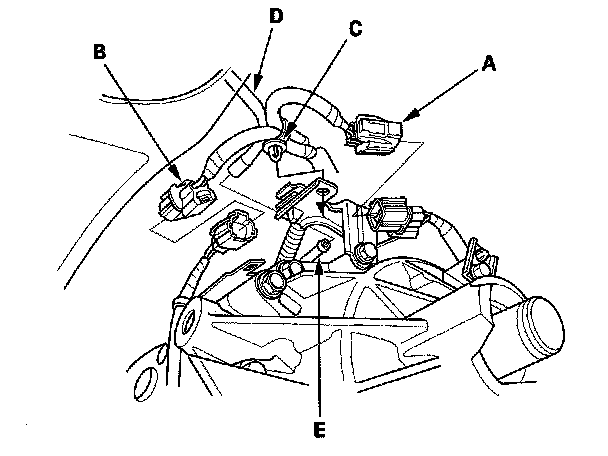

Rear Differential Removal
Rear Differential RemovalSpecial Tools Required
Driveshaft remover 07AAD-S3VA000
1. Drain the differential fluid.
2. Remove the exhaust pipe (A).
3. Remove the right rear driveshaft.
4. Make a reference mark (A) across the propeller shaft (B) and rear differential companion flange (C). Separate the propeller shaft from the rear differential.
NOTE: Suspend the propeller shaft with an appropriate size wire.
5. Place the transmission jack (A) under the rear differential (B).
6. Using the driveshaft remover (C) and the hammer, and disconnect the left rear inboard joint (D) from the rear differential.
7. Remove the rear differential mounting bolts (E).
8. Lower the rear differential a little on the transmission jack, then remove the left rear driveshaft inboard joint from the rear differential.
NOTE: Make sure not to over extend the harness and the tube.
9. Disconnect the right clutch solenoid 4P connector (A) and the rear differential fluid temperature sensor 2P connector (B) then remove the harness clip (C).

10. Disconnect the breather tube (D) from the breather pipe (E).
11. Slowly lower the rear differential a little on the transmission jack.
NOTE: Make sure not to over extend the harness.
12. Disconnect the left clutch solenoid 4P connector (A) then remove the harness clips (B).

13. Disconnect the ground cable (C) from the rear differential.
14. Lower the rear differential on the transmission jack.